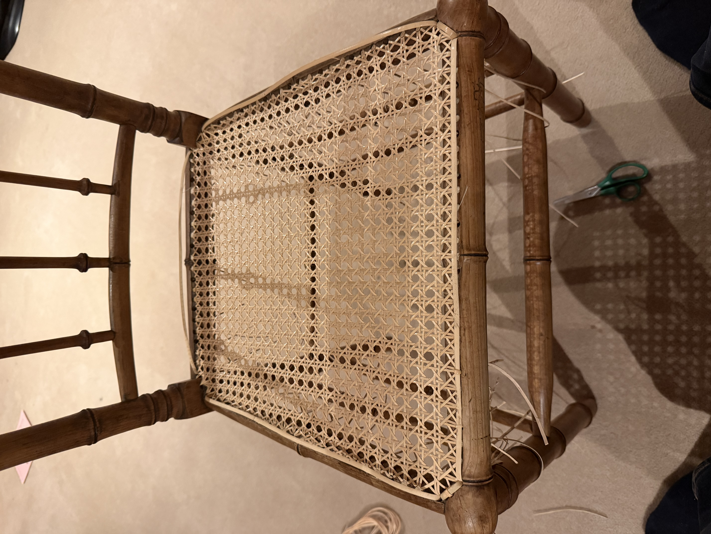
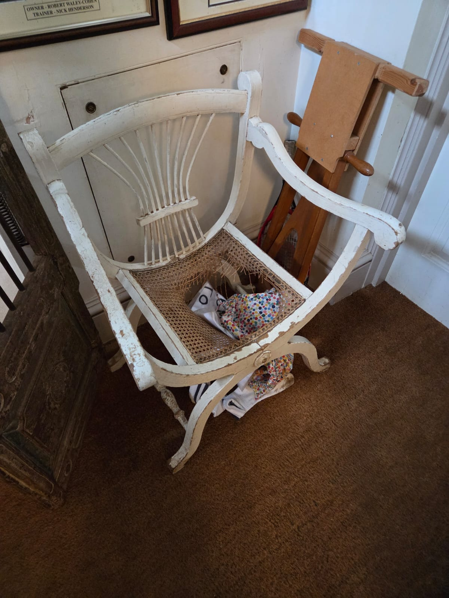
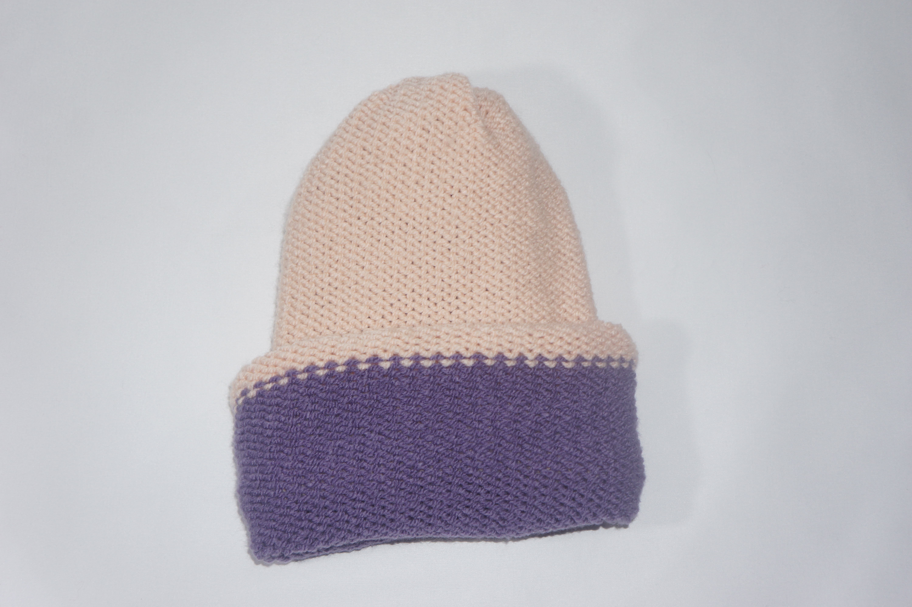
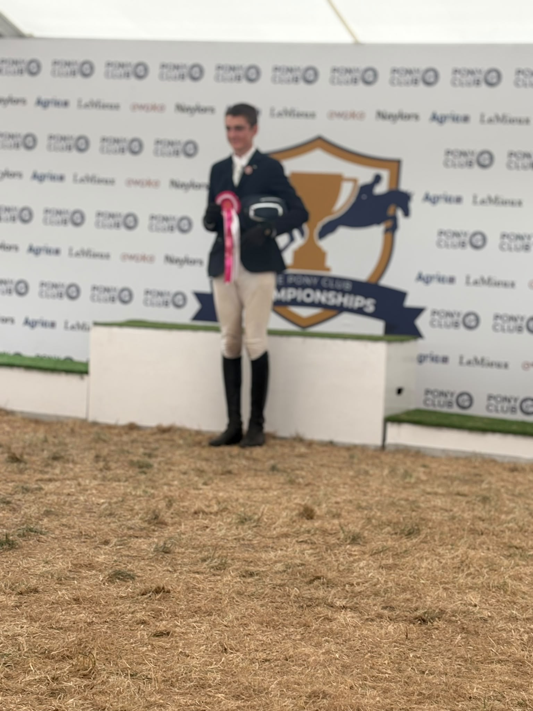
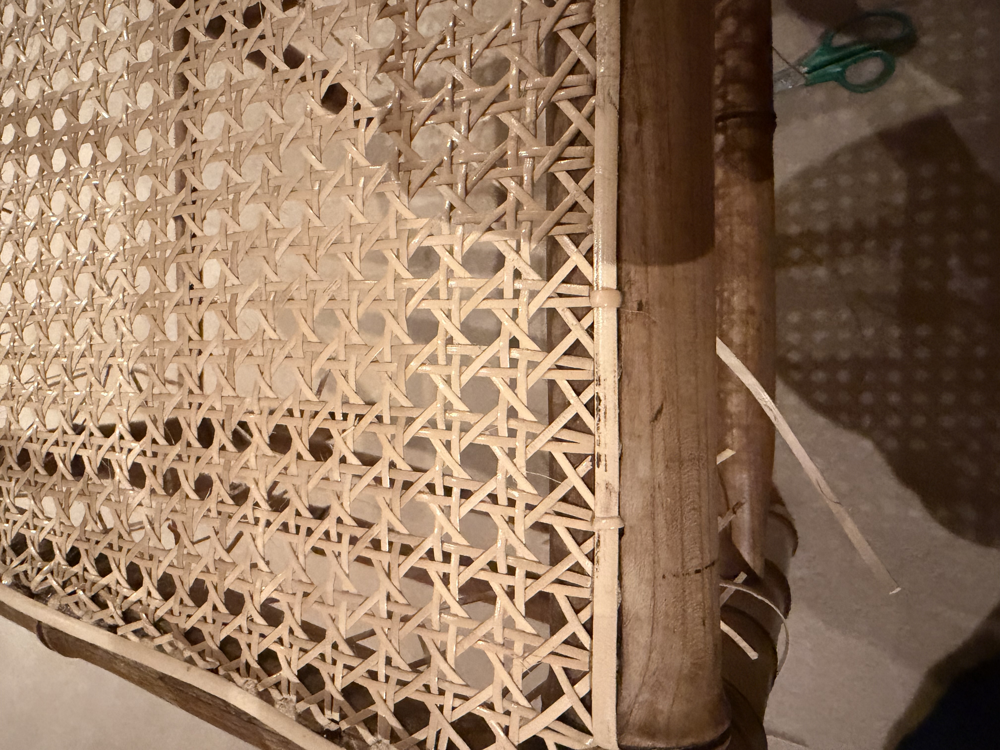
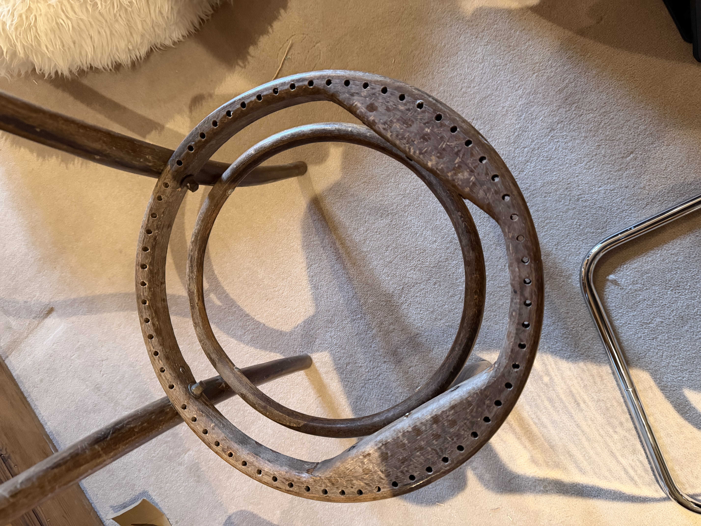

Removing the cane
i star of by carfully removing the cane and make sure i dont damage teh chare whi doing it. i also check for any current screches or defects before statring and document them
I love when i get to recive an old broken chair and can restore it to it fomer glorry so it look's just as good as when somone first got it.
← Back to home
I love weaving chairs and how much fun it is to recane a chair. it is also a nice carm time when i have a break inbetween my lessons as a bit of minfulness
i use the seven step prosses which i will go into more bellow in a minute hover the way i explain leterr is not folling the traditional weave order as the normal way gose up(1) then across(2) then up(3) again then across(4) again then diaganal(5) then diaganl(6) so 1,2,3,4,5,6 but i usally at the moment do 1,3,2,4,5,6 this non traditional way i will show bellow
i star of by carfully removing the cane and make sure i dont damage teh chare whi doing it. i also check for any current screches or defects before statring and document them

The first step is to weave up and down oncse
The second weave is to do the same as weave one with another peice of cane


I weve at 90 degrees towhat i have already done for one weave.
I do the samne a step three burt weaving in a differnt patter.


i noe do the first fiagonal weave agrros the chair. before doint this weave however it is my last chanse to make sure the grid is streight and looks good as this steps lock everthing in.
i noe do another diagonal the other direction to the first weave this step is the harderst as the is the least amount of room to weave thae cane up and down
the last step is to add a boarder to the top of thechair
done 2 and doing 2 more
1
1